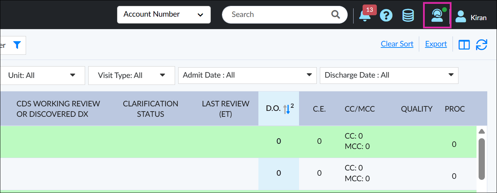
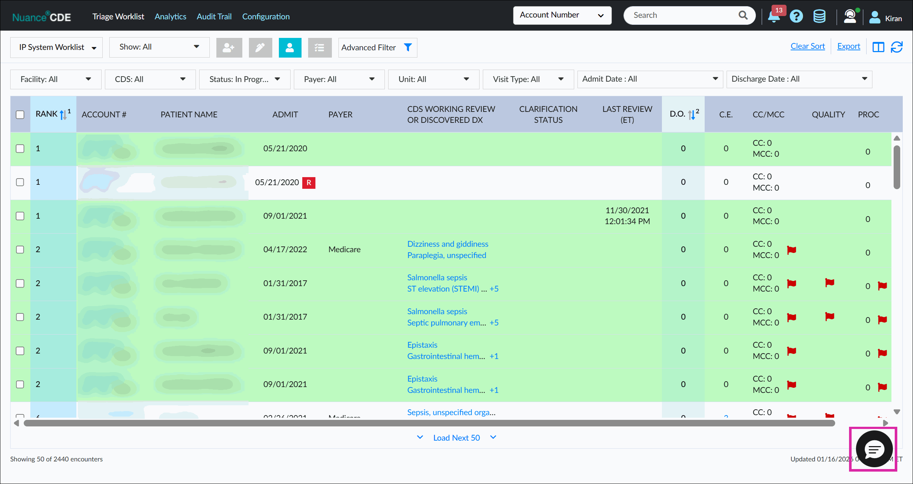
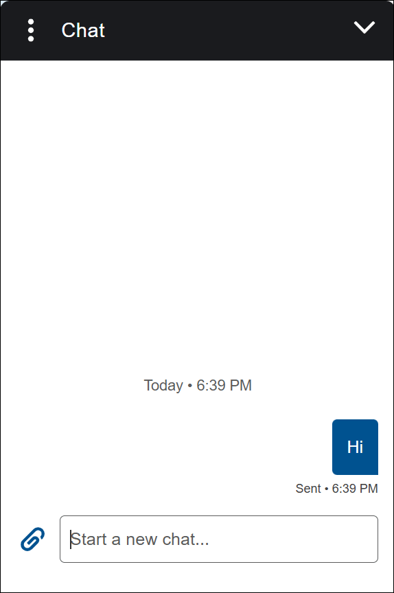
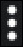

Live Chat
Overview
Live Chat provides an easy way to connect with support experts while working in CDE One, allowing you to get timely assistance for technical issues without leaving the application.
How to Access CDE One Live Chat
- Click the Live Chat icon in the upper-right corner of the Nuance CDE
One screen.

Note:-
A green indicator next to the live chat icon means an agent is available for chat.
-
A cross indicator next to the live chat icon means an agent is currently unavailable.
-
The chat bubble icon (represented by a speech bubble) appears in the lower-right corner of the screen.

- Click the chat bubble icon to open the chat window. To hide the chat bubble icon, click the Live Chat icon again.
-
The chat window opens, and you can start chatting.

-
Attach documents.
-
Click the arrow in the upper-right corner to minimize the chat window.
-
Click the

ellipsis in the upper-left corner to:-
Request Chat Transcript: Download the conversation in PDF format.
-
End Chat: Click to end the conversation.
-
Support Agent Availability
Support agent availability for live chat is based on business working hours. An agent may not be available if you initiate a chat outside working hours or on holidays.
- Monday to Friday: 8:00 AM to 8:00 PM.
-
Saturday and Sunday: Closed.
Features
-
While using live chat, the following information is automatically passed to Salesforce Live Chat. The user does not need to share this information manually with the agent.
-
First Name
-
Last Name
-
Email Address
-
Healthcare Organization
-
-
The chat window displays the name of the support agent you are chatting with.
Client Support:
Phone: 800.892.5049
Fax: 877.238.2776
Web Portal: http://www.nuance.com/support/index.html